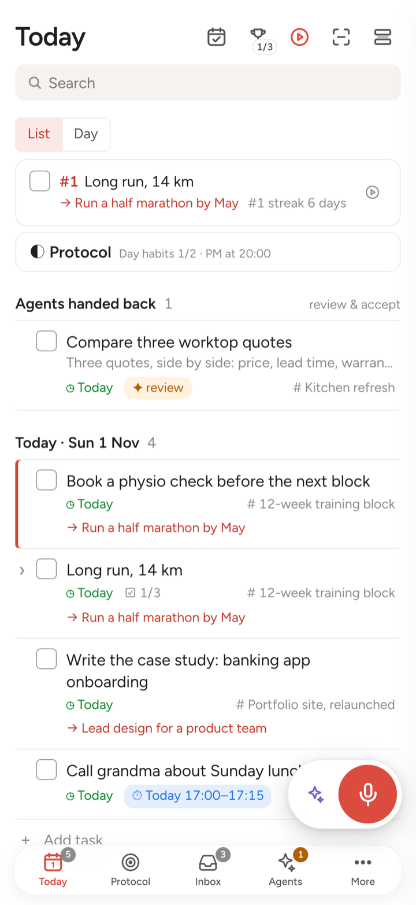
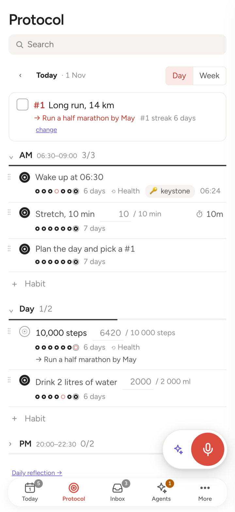
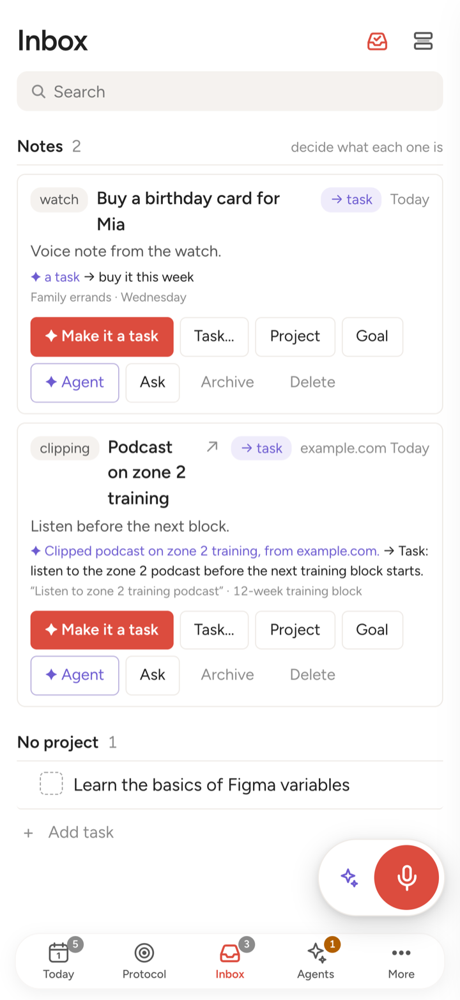
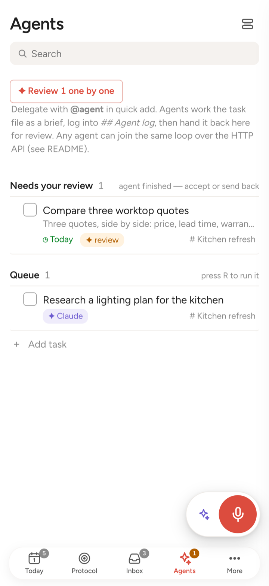
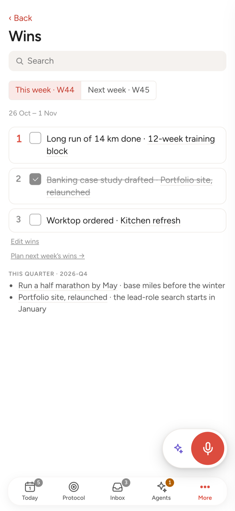
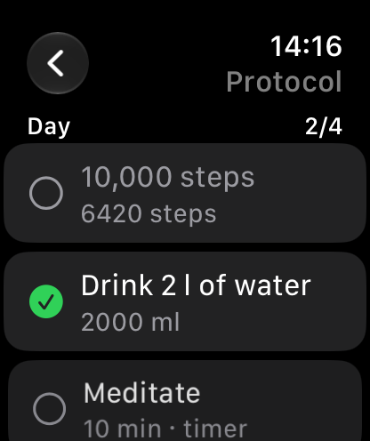
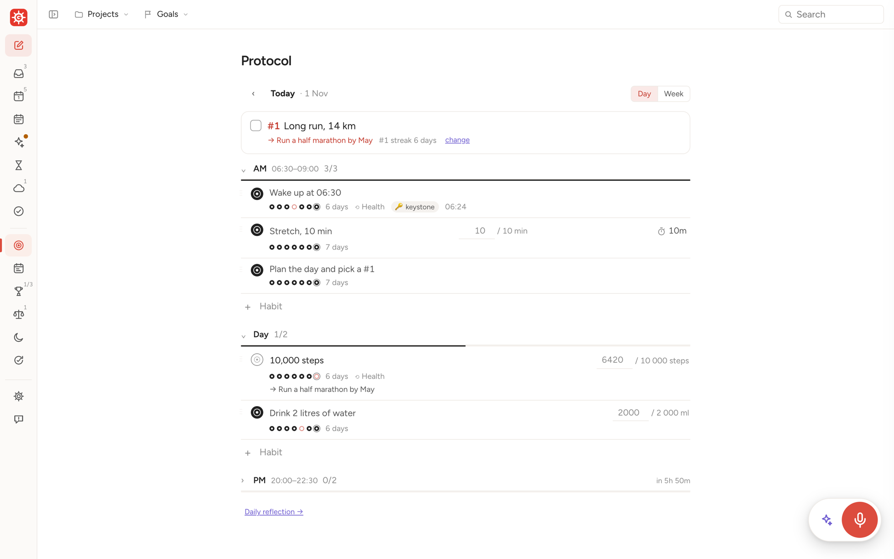

A personal operating system (from Latin gubernare, to steer): tasks, projects, goals, habits and your day, with AI agents that take part of the work off your hands. Your files stay on your own computer.
The current version is a beta: things change quickly, and your files stay yours whatever happens.







Screens from a demo system.
What is a personal OS
What you are responsible for, what you have promised, what you want and what you still have to decide, wired to your projects, your tasks and today. Gubernos keeps that model in plain files you own and gives you, and your AI agents, one place to steer it.
Your life as a wheel: today at the hub, the reasons around it
Each ring is a slower horizon. Anything on an inner ring links outward to why it matters, so a task is never just a task, and an area is never just a wish without a next step.
- 1Today’s #1Long run, 14 kmThe one result that makes the day a win
- 2Project12-week training blockAn outcome with an end, made of tasks
- 3GoalRun a half marathon by MayNext to it sit your promises, wishes and open decisions
- 4AreaEnergyNever done; it is why the rest exists
Life loops: a day inside a week inside a quarter
Every loop plans, does and looks back. The day reports to the week, the week to the quarter, and each review carries what you learned back into the model.
A morning plan that fits your real calendar, the habits that frame the day, one result that matters, and a short look back.
Three results, not a to-do list. The review shows habits, finished work and what slipped, and suggests next week’s wins.
Where you choose what deserves the next months, close open decisions, and drop what no longer fits.
Everything that comes in feeds the loops. A voice note on the watch, a shared link, a mail, a thought at 2 am: it lands in the Inbox, an agent reads it and proposes what it is (a task, a reference, a note for later), and you decide with one tap.
Everything stays with you. Gubernos keeps nothing of yours except a report you send.
Your system is a folder of plain Markdown files on your computer, a Mac or a Linux or Windows PC (or in your iCloud Drive, if you like). The apps and the agents read and write those files on your devices; your iPhone keeps a copy from the computer, and an Android phone or a browser works on it live. There is no Gubernos account and no analytics. Your phone reaches your computer through Cloudflare, under our account, so it could be seen there; we don’t store it. A small relay passes iPhone notifications through without keeping them, and carries the bug reports you send to us, where we keep them to fix the app.
Capture, today, habits, reminders, widgets. Keeps a copy of your files, so it works offline too.
The same screens, installed from Chrome as an app, with notifications. Live from your computer while it is on.
computer
One folder of Markdown: tasks, projects, goals, habits, days, reviews. Readable in any editor, today and in twenty years.
folder
A Mac, or a Linux or Windows PC, runs Gubernos: planning with your calendar, voice, the chat. Your phones reach it from anywhere through Cloudflare, once paired with it.
Claude Code or Codex on your computer, with your own AI subscription. They work in the same files.
There are none. No account to create, no tracking, and we keep nothing of yours except a bug report you choose to send. One small relay carries those reports and passes notifications to your iPhone without keeping them; Android and browsers get theirs from your computer, through their own push service. The code is open source, so anyone can check.
Your agent can do anything. The app gives your life’s routines a shape.
You can already ask Claude or Codex to work in a folder of notes. Gubernos adds the structure an agent does not keep on its own: the model, the loops and a screen for each step, on your computer, phone and wrist.
With your agent, in plain words
- Open-ended work: research, drafts, analysis
- Anything you can describe
- Best at a desk
In Gubernos, a screen for each step
- The morning plan against your real calendar
- Habits and protocols, ticked on the watch
- The inbox, sorted by an agent, decided by you
- Weekly wins and the weekly review
- Hand a task to an agent, then check its work and accept it
- Personal flows that need you in the loop, wherever you are
Both read and write the same files. Use either, or both.
What it does
- Capture anything: type, dictate, share from any app, or speak to your Apple Watch. The inbox agent says what each item is.
- Plan the day around your calendar, with the one thing that matters most first.
- Hand tasks to agents: research, drafts, follow-ups. They report back for your review.
- Habits and protocols for your mornings and evenings, ticked off from Apple Health where it can.
- Weekly review and a model of what you’re responsible for, committed to and want.
- Bring your tasks: import from Todoist, Things, Apple Reminders or any app’s export file (Settings → General → Import tasks).
Install Gubernos
Gubernos runs on your computer, and your phone connects to it.
- An AI subscriptionClaude with Claude Code (Pro or higher), or any ChatGPT plan. The first talk, the chat and the agents run on it. Claude plans · ChatGPT plans
- Gubernos on a computerA Mac, Windows or Linux. It’s the server: your files, the agents and the calendar live there.
- The app on your phoneiPhone and Apple Watch, or Android. It reaches your computer from anywhere, while the computer is on.
The easiest way: let your AI agent install it
On your computer, open Claude Code or Codex, whichever your plan covers (how to get one), and paste:
Install Gubernos for me: read https://raw.githubusercontent.com/old-bozman/gubernos/main/SETUP.md and do the part "For the agent".It installs Gubernos, creates your folder, connects your phone and interviews you to fill the system. You only click Allow where it asks and scan a code with your phone. Works on a Mac, Linux or Windows: on Windows the agent runs the PowerShell line below for you, and you restart once if Windows needs WSL.
Or install it yourself
Mac
macOS 13 or later, Apple silicon or Intel. Open it and double-click Gubernos. No Terminal.
Or in Terminal: install guide.
Windows
In PowerShell (Start → type PowerShell), paste:
irm https://gubernos.app/install.ps1 | iexIt installs WSL (Windows’ own Linux) with Ubuntu if needed. Allow it as administrator, restart, choose a Linux user name and password in the Ubuntu window, then run the same line again.
Linux
In a terminal, run:
curl -fsSL https://raw.githubusercontent.com/old-bozman/gubernos/main/install.sh | bash -s -- --wizardNeeds curl, tar and rsync. On a machine without a screen it prints the link. Install guide
Each of these ends on the same setup page in your browser: your name, where your files live, and signing in to Claude or ChatGPT.
Your phone
iPhone and Apple Watch
The app, in beta through TestFlight. Keeps a copy of your files, so it works offline too.
- Install TestFlight from the App Store.
- On the iPhone, open testflight.apple.com/join/rBUGmgJG → Accept → Install.
- On the computer, in Gubernos: Settings → Your Mac → iPhone and other devices → Connect your iPhone, and scan the code with the iPhone’s camera.
Android
A web app from Chrome, with notifications. Works live from your computer: no offline copy, widgets or Health.
- On the computer, in Gubernos: Settings → Your Mac → iPhone and other devices → Android or a browser. It gets an https address in about a minute.
- Scan the code marked Android and open it in Chrome, or Copy link and send it to the phone.
- Chrome menu ⋮ → Install app.
- In Gubernos on the phone: Settings → This device → Notifications On.
The phone reaches your computer through Cloudflare, and only paired devices get in (what that means). Keep the computer awake: Keep this computer awake on power, in the same settings, is on by default.
No computer? The iPhone app also works on its own over a folder in iCloud Drive: open Gubernos → Or use the phone on its own. You get tasks, habits, reminders, widgets and the watch; agents, the chat, voice and calendar planning need the computer.
Feedback: in the app, menu ☰ → Report bug / idea, or in TestFlight take a screenshot → Share Beta Feedback, or open an issue on GitHub. More help: Support.